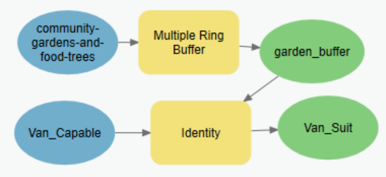

Lab 3 Cartographic Modelling
Written by Amy Blood
Lab Overview
In geomatics, you will often need to answer questions related to how well situated an object is dependent on its surroundings. In urban forestry for example, you might look at the ability for a tree to thrive given (a) soil characteristics, (b) how far the tree is from pollutant-heavy roadways, and (c) the number of tree vandalism crimes in the neighborhood. With data from several tree planting sites, these overlay and proximity factors can be combined using models to complete capability and suitability analyses.
For this lab, you are using overlay and proximity tools to determine where in the City of Vancouver would be suitable for a new community garden.
Task 1: Download and prepare data
Step 1: Download data.
You will be downloading most of your data from the City of Vancouver Open Data Portal (https://opendata.vancouver.ca/pages/home/).
The datasets you will need to download from the open data portal above are:
- Community Gardens and Food Trees (shapefile)
- Local Area Boundary (shapefile)
- Census Local Area Profiles 2016 (xls)
A fourth dataset (Landuse 2016) can be found on the course management system. This shapefile was downloaded from Metro Vancouver’s Open Data Catalogue; however, at least two of the polygons had errors and needed to be edited for the analysis to work properly.
Download all of the lab data and put it in a new ArcGIS Pro project folder.
Step 2: Pre-process census data.
Census data requires pre-processing before loading it into ArcGIS. The census data you downloaded was custom-ordered from the City of Vancouver and is delineated by Vancouver’s 22 planning districts. Open “Census Local Area Profiles 2016” in Excel. There is a lot of information in this file, and you’re encouraged to scroll through it (and/or its metadata).
The first four rows in the workbook are descriptive information and need to be removed before analysis; select and delete them. Now the first row should have planning district names. The values in the second row (ID 1) represent the approximate population value in each planning district.
Now you need to filter the data to only keep “Total - Age groups and average age of the population -100% data” and “Median total income of households in 2015 ($)”. Select the “Variable” column (Click on the B above the cell that reads “Variable”). Then select “Data” in the top ribbon > Filter. The cell should now have an arrow representing a dropdown menu. Within the dropdown, click Text Filters > Equals.
Show rows where Variable:
- equals “Total - Age groups and average age of the population - 100% data”
- OR
- equals “Median total income of households in 2015 ($)”
Click OK.
Be sure to either type the variable names EXACTLY as they appear, or select them from the dropdown menu in the Custom Autofilter window (the variables are alphabetized but there are many of them). If the filter does not work, you can search for the columns using the control/command-f feature and manually select the appropriate rows.
You should have only two rows of data, with IDs 1 and 3964. Copy the data and column names, create a new sheet, then Paste Special them transposed into the new sheet. The transpose option is underlined in red within the image below.

Remove the ID row and both of the rows that start with “Vancouver.” The current column names are too long, have spaces, and contain special characters. These features would all cause issues in ArcGIS Pro. Additionally, two of the three column names are not meaningful to your current dataset. Rename your columns:
- “Variable” -> Plan_Dist
- “Total - Age groups and average age of the population - 100% data” -> Population
- “Median total income of households in 2015 ($)” -> Med_Hou_Inc
Lastly, add/remove spaces from the Planning District names in the excel sheet so they match the names in local-area-boundary.shp. The census data contains a space after most of the planning district names, and local-area-boundary.shp does not. Remove the extra spaces after the Planning District names in excel—all but Victoria-Fraserview have a space at the end. You can do this manually, or by using the equation below. A2 is the Planning District Name, and the -1 represents removing the last character from the string (in this case, a space). You should not use this equation for Victoria-Fraserview.
=LEFT(A2, LEN(A2)-1)
Save the sheet as census.csv
Step 3: Join the census data with a shapefile.
Now you are going to view the census data spatially by joining the local area boundary shapefile with the census csv. Open ArcGIS Pro, and add local-area-boundary.shp. Right-click the shapefile in Contents > Joins and Relates.. > Add Join.
For the tool:
- Input Table: Local Area Boundary
- Input Join Field: name
- Join Table: census.csv
- Join Table Field: Plan_Dist
Click OK.
Open the attribute table of local-area-boundary.shp to verify that the join succeeded. If the join did not succeed, it is likely because the cells in census.csv did not exactly match those in local-area-boundary.shp. Double-check that the spacing is the same for both datasets. If the Arbutus-Ridge neighbourhood does not have a match, ensure that the “-” is present in both tables and manually enter it if it is missing. Your join should automatically update.
To redo the join, right-click the shapefile in Contents > Joins and Relates.. > Remove All Joins. Then repeat Step 3.
Task 2: Capability
Step 1: Identify locations in Vancouver that are capable of having a new community garden.
Add Landuse2016.shp to your map and look at its metadata in Catalog View (View > Catalog View). Here you will see information about the dataset, including what each LU_code means.
Calculate the area in ha of each polygon using “Calculate Geometry”. When creating new field names, remember that you cannot use spaces or special characters such as parentheses. Keep column names simple. Use “Select By Attributes” (either in the Map Tab of the top ribbon, or at the top of the attribute table) to select the two land uses that have the capability to be used as potential community garden spaces (R100 & U100). Additionally, select only those land uses that are greater than 0.1 ha in size.
For the tool:
- Input Rows: Landuse2016
- Selection Type: New selection
- +New Expression: Where LU_code is equal to R100
- +Add Clause And areaha is greater than 0.1
- +Add Clause Or LU_Code is equal to U100
- +Add Clause And areaha is greater than 0.1
Click OK.
With these selected, you are going to run the “Identity” tool. For the tool:
- Input Features: local-area-boundary
- Identity Features: Landuse2016
- Output Feature Class: Van_Capable
- Attributes To Join: All attributes
Click OK.
Your result will have the same extent as local-area-boundary.shp, and will have polygons for each neighborhood and each capable location. There should be three unique values in LU_code: R100, U100, and no value (the cells should be blank). Change the symbology of resulting shapefile (by LU_code) and look at what you have; everything that has a blank LU_code is incapable.
It is possible that the input will erroneously apply attributes from some Landuse2016 polygons to larger areas. Verify that there are no excessively large parcels, such as in the area of the Musqueam 2 reservation. Identify which landcover FID is causing the issue, and then manually de-select it before re-running the identity tool.
Create a new field (of Data Type Short) called capable, and populate it with the number 1 for capable areas and the number 0 for incapable areas. This can be done using Select By Attributes and Calculate Field (once the selected polygons are populated with 1, you can switch the selection and populate the others with 0).
Q3. What were the capability requirements in this assignment?
Step 2: Quantify the area that is capable.
Some of the polygons in Landuse2016.shp were split by the identity tool, and others were merged. Recalculate the area in ha. Now, you will determine how much area is capable and how much is not. Open “Summary Statistics” by right-clicking the capable column in Van_Capable. For the tool:
- Input Table: Van_Capable
- Output Table: Cap_SumStats
- Statistics Field(s)
- Field: Areaha
- Statistic Type: Sum
- Case field: capable
Open Suit_SumStats and look at the resulting summary statistics.
Task 3: Suitability
Now that we know the possibly capable areas, we are going to determine which of them are most suitable.
Step 1: Determine which areas are close to existing food trees and community gardens.
Add community-gardens-and-food-trees.shp to your map. Use the “Multiple Ring Buffer” Tool to identify areas which are very close (within 200 m), close (between 200 and 400 m), and somewhat close (between 400 and 600 m) from existing food trees are community gardens.
For the tool:
- Input Features: community-gardens-and-food-trees
- Output Feature Class: garden_buffer
- Distances: 200 +Add another 400 +Add another 600
- Distance Unit: Meters
- Buffer Distance Field Name: distance
- Dissolve Option: Non-overlapping (rings)
Click OK.
Now you are going to run the “Identity” tool to add the buffer information to your capability dataset.
For the tool:
- Input Features: Van_Capable
- Identity Features: garden_buffer
- Output Feature Class: Van_Suit
- Attributes To Join: All attributes
Click OK.
Step 2: Assign suitability values to garden buffers and median household incomes.
In Van_Suit.shp, create a new field (Data Type: Float) called gard_suit. Populate the fields with 0 for the closest buffer, 0.25 for the close buffer, and 0.75 for the somewhat close buffer.
All of the polygons outside of the buffer now have the distance field populated with “0”. This is incorrect, as the distance is beyond 600. You can populate the 0’s with -1 if you would like, just to keep track of the represented distance. Select all of the rows with a distance beyond 600, and populate the gard_suit column with the value 1.
Community garden building will be prioritized in low income areas. In Van_Suit.shp, create a new field (Data Type: Float) called inc_suit. You will populate this with income values normalized from 0-1, with 1 representing the most suitable and 0 representing the least suitable.
To scale the income values, you will divide the income values by the maximum income value. However, this result causes higher income areas to have values closer to 1 and lower income areas to have values closer to 0. The result should then be subtracted from 1. The equation would look something like this:
inc_suit = 1 – (med_hou_inc/max(med_hou_inc))
You may have to manually identify the maximum value in med_hou_inc by right clicking on the attribute and selecting “Explore Statistics”.
Step 3: Calculate suitability.
Finally, the suitability and capability fields can be combined to determine overall suitability. Create one final field, named suitability (Type: Float). Suitability is determined by weighting each suitability metric – a metric that is more important is given a larger weight. The total weight must add to 1.
For example, if distance to an existing community garden was deemed to be three times as important as median household income, distance to a community garden would be weighted 0.75 and income would have a weight of 0.25
Each weight is then multiplied by its respective scaled value, and then the results are added. The entire suitability calculation must be multiplied by the capability values so that only capable areas are considered. For the above example, the equation would look like this:
suitability = capability*(0.75*gard_suit + 0.25*inc_suit)
For this exercise, distance from a garden will be weighted the same as median household income. Calculate suitability, with the weight for distance from a garden set to 0.5 and the weight for median household income set to 0.5.
Task 4: Build a Suitability Model
Models allow for easy replication of tasks. You will be building a model using the workflow in Task 3.
Step 1: Prepare model building.
Open the Catalog Pane, and right-click the folder you have been saving things into. Select New>Toolbox. Name the toolbox “Suitability”. Then, right-click the Toolbox and Select New>Model.
If ModelBuilder didn’t open automatically, right-click your Model and select “Edit”. A blank pane should appear, with your model name as the tab name. Also open History (Analysis > History).
Step 2: Build the model!
Drag and drop the completed actions from Task 3 (“Multiple Ring Buffer” and “Identity”) into the ModelBuilder pane. The tools should automatically be connected, because the results from “Multiple Ring Buffer” were used in “Identity”.
If you no longer have the geoprocessing steps in History, you can (a) run the tools again, or (b) add the tools and input the variables.
After you run the tools, they will show up in History and you can drag and drop them into the ModelBuilder pane.
You can drag and drop the tools directly from their respective toolboxes within the Geoprocessing Pane. Then in ModelBuilder, you can right-click each tool (as displayed by rounded rectangles), select open, and fill out the tool options as you did in Task 3. When a section of the model is complete, the shapes will go from grey to coloured. To connect the model components, you click on a component (and while holding the pointer down), drag the arrow that appears from one component to another. Once you let go, options for what the component is in the model will pop up. Your model is not complete if it is still in grey—a complete model is coloured. However, non-connecting tools will also be coloured. The tools in your model should connect.
For more help with ModelBuilder, use ArcGIS Help (Project > Help > ModelBuilder (in the search)).
Your model should look similar to the one below.

Task 4: Create and export a map
Lastly, you will be making a map showing capability and suitability. Include your capability and suitability maps in the same layout. Include an inset of the area that is most suitable for a community garden.
Be sure to use a proper colour ramp— quick examples of when to use which type of colour ramp can be found at the following website (https://carto.com/carto-colors/).
What we expect to see:
- Capability Map
- Suitability Map
- Suitability Inset
- Necessary map components (title, legend, scale bar, north arrow, student name, coordinate system)
To export the map, find “Layout” under the share tab. Select PDF as the file type, and use an appropriate resolution. Open your exported map and make sure that everything on the map is legible
Export your map to PDF and include it in you final report along with the other lab questions.